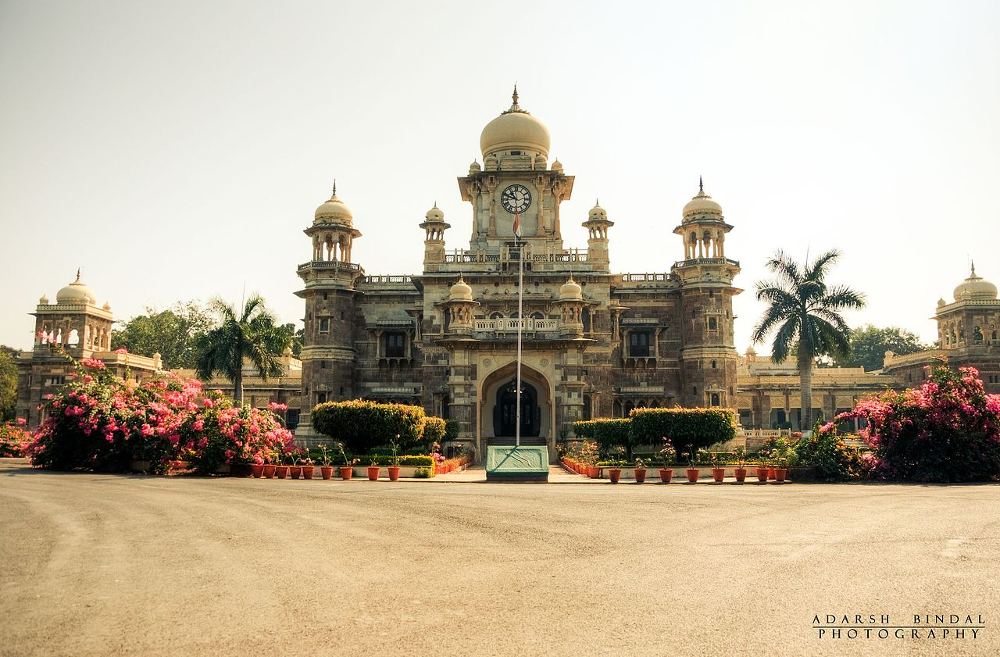
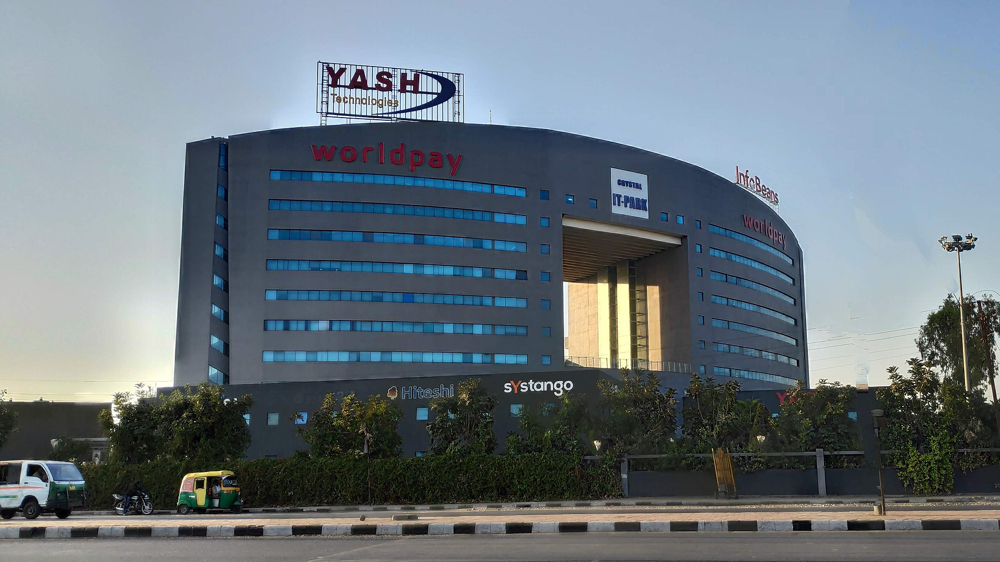
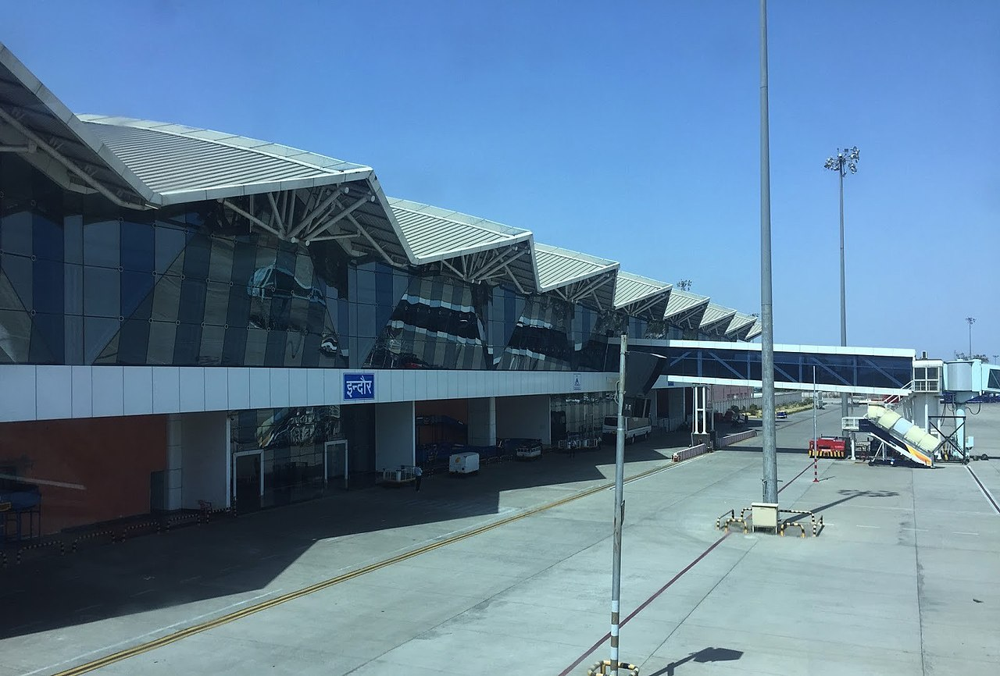
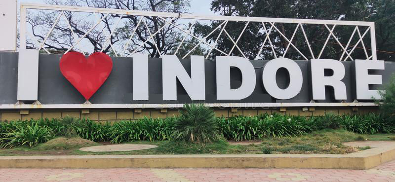

My City
Indore
Indore is the most populous and the largest city in the Indian state of Madhya Pradesh.It serves as the headquarters of both Indore District and Indore Division. It is also considered as an education hub of the state and has campuses of both the Indian Institute of Technology and the Indian Institute of Management.Located on the southern edge of Malwa Plateau, at an average altitude of 553 meters (1,814 ft) above sea level,it has the highest elevation among major cities of Central India. The city is 190 km (120 mi) west of the state capital of Bhopal. Indore had a census-estimated 2011 population of 1,994,397 (municipal corporation) and 3,570,295 (urban agglomeration).The city is distributed over a land area of just 530 square kilometres (200 sq mi), making Indore the most densely populated major city in the central province.

Indore has been selected as one of the 100 Indian cities to be developed as a smart city under the Smart Cities Mission. It also qualified the first round of Smart Cities Mission and was selected as one of the first twenty cities to be developed as Smart Cities. Indore has been part of Swachh Survekshan since its inception and had ranked 25th in 2016. It has been ranked as India's cleanest city five years in a row as per the Swachh Survekshan for the years 2017, 2018, 2019, 2020 and 2021. Meanwhile Indore has also been declared as India's first 'water plus' city under the Swachh Survekshan 2021. Indore became the only Indian city to be selected for International Clean Air Catalyst Programme. The project with cooperation of Indore Municipal Corporation and Madhya Pradesh Pollution Control Board, will be operated for a period of five years to purify the air in the city.

The city also has IT Parks, Crystal IT Park (550,000 square feet), Pardeshipura IT Park (100,000 square feet.), Electronic Complex, and Individual Special Economic Zones (SEZs) such as TCS SEZ, Infosys SEZ, Impetus SEZ, Diamond Park, Gems and Jewelry Park, Food Park, Apparel Park, Namkeen Cluster and Pharma Cluster.

The Yeshwant Club (named after Late the Maharaja Yeshwant Rao II Holkar of Indore) and Sayaji Club/Hotel (named after Late the Maharaja Sayaji Rao III Gaekwad of Baroda) are big sponsors for art & music and invite talents from across the world. The major art centers in Indore are the Devlalikar Kala Vithika, Ravindra Natya Grah (RNG), Mai Mangeshkar Sabha Grah, Anand Mohan Mathur Sabhagrah, DAVV auditorium, and Brilliant Convention Centre.
The city has a good rock/metal music culture which is growing. Nicotine, one of the city's earliest and most renowned bands, is widely known for being the pioneer of metal music in Central India.
Indore was going to host IIFA (International Indian Film Academy) Awards 2020 from 27 to 29 March at the Daly College.[120] This has been postponed due to concerns regarding spread of coronavirus.

Electricity in Indore is supplied by the Madhya Pradesh Paschim Kshetra Vidyut Vitaran Company Limited, the state's agency.
